Case Study

Founder, Product, & Experience Designer

Community-driven restaurant specials and insights
Selected as a
Top 100 Startup
Founder, product and experience designer. Joolep helps people find local food and drink through real time community insights.
- Role
- Founder, Product & Experience Designer
- Recognition
- Top 100 Startup, eMerge Americas
- Status
- Web app 2.0 live at joolep.com
The Idea
Joolep is a platform I designed and founded to help people discover local food and drink spots through real-time community-powered insights.
What started out as “The Hour” which was just a Happy Hour finder, led me places I’d never expect.

The Problem

Consumers still struggle to discover up-to-date food and drink experiences, whether it’s happy hours, brunch, or weekly specials. Most listings are outdated, and owners don’t have time to constantly update info.
- Food discovery is still frustrating and outdated
- Specials, events, and promotions are rarely current
- Establishments don’t have time or tech to maintain their latest updates, specials, and events online
- Consumers are left guessing, refreshing, or searching multiple platforms
“Staying up-to-date in the food and drink scene shouldn’t be so difficult…”-Food Writer
My Role
I founded and led the end-to-end design of Joolep:
- Researched and validated the concept with real users
- Designed the branding, UX, UI, and marketing strategy
- Led developers to build and test multiple MVPs while iterating based on community feedback
The Solution
So...I created Joolep, a community-driven discovery platform that keeps food and drink updates current and reliable—helping both consumers and businesses stay connected in real time.
Users have the ability to:
- Access community-powered, always-current information
- Receive real-time insights from their favorite places to eat and drink
- Get notified when new or updated specials are available in their area
For businesses:
- Focus on what matters most: delivering great customer experiences, no more reviews
- Business efforts are eased with community support
- Promote specials, events, and behind-the-scenes updates

“There is immense power when a group of people with similar interests gets together to work toward the same goals.”– Idowu Koyenikan
Research & Discovery
To better understand the needs of both restaurant owners and diners, I conducted informal interviews with local business owners and surveyed food enthusiasts. I also audited platforms like Yelp, Instagram, and Google Maps to identify key gaps in reliability, timeliness, and usability.
- Interviews with 50+ users (owners + eaters)
- Competitor research (Yelp, Instagram, Google Maps)
- Key insight: “We want reliable, local, and alive info”

Product Design
After several iterations and rounds of user feedback, I landed on a clean, modern UI that highlights what users care about most—what’s happening nearby, right now.
Mobile app
Easily Find Specials, Events, and Local Spots
Users can browse nearby specials or events, explore on a map, and filter results based on what they’re in the mood for—right now.


Highlight What Makes Each Spot Special
Restaurant and bar owners can showcase specials, events, and keep the community updated. Users can support with shoutouts and keep everyone in the loop through community updates and comments.


Personalized Experiences and Real-Time Alerts
Users can save spots, promote places through shoutouts, and stay in the loop with real-time notifications about specials, events, and community activity.


Branding & Marketing
I developed a brand system that feels clean, modern, and trustworthy—focused on clarity over flash. The identity is designed to be flexible across app, web, and pitch materials, while keeping the experience approachable and community-first.
Color
Joolep’s color palette is purposefully minimal, designed to feel white-labeled. I wanted to keep the focus on the restaurants and food experiences featured in the app.
Instead of competing with partner brands, Joolep’s colors provide a clean, consistent framework that allows each location’s personality to stand out. This ensures that whether a restaurant uses bold, rustic, or elegant colors in their imagery, the app remains a neutral canvas that complements their style.
Primary Palette
Typography
Joolep’s typography balances warmth and clarity—pairing bold headlines with clean, highly legible body text. This creates a strong visual hierarchy that draws attention to stories, specials, and community updates.
Logo Typeface
Primary Typeface
Secondary Typeface
(Optional Pairing)

A display serif with high contrast and elegant curves, Abril Fatface adds personality and impact to the brand’s logo and key headlines. I chose this because it conveys a sense of craft, storytelling, and tradition, which feels perfect for a brand rooted in food culture.
A clean, modern sans-serif chosen for its readability across digital and print mediums. Its open and balanced proportions make it ideal for communicating key information.
A friendly, rounded sans-serif that softens the visual tone and works well for supporting text. Its approachable style pairs well with Source Sans Pro while adding a welcoming, community-first feel.
Marketing
Joolep’s marketing approach focuses on building community trust and driving discovery through consistent, content-driven storytelling.
App Icons


App Store Screens


Social Banners


Sparking your curiosity


Business Cards

Emerge Americas
Startup Showcase
Joolep was selected as one of the Top 100 Startups at eMerge Americas, a leading global tech conference connecting innovators, investors, and industry leaders.
This recognition highlighted Joolep’s potential to transform how people discover and connect with local dining experiences, and provided valuable exposure to investors, partners, and the startup community.
Selected as a
Top 100 Startup


Joolep 2.0 is a complete redesign.
The web app is a ground up rebuild, not a reskin of the mobile app. It turns Joolep into one place for a city’s food and drink scene.
- Version
- 2.0, a full redesign
- Role
- Founder, Product & Experience Designer
- Status
- Livejoolep.com
The Direction
The mobile app is built for the moment you are out and hungry. The web is where people plan: where to go this week, which neighborhood, what is worth the trip.
For 2.0 I designed the web app as a guide to a whole city’s food and drink scene, starting with Miami, instead of a feed of nearby posts.
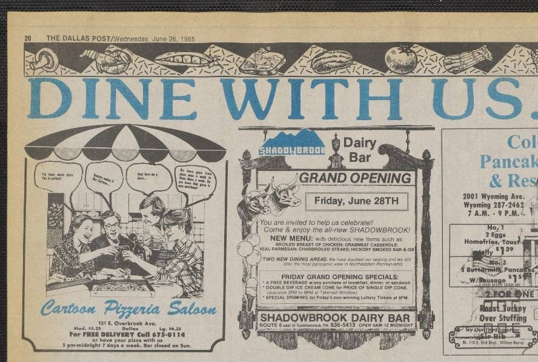
The kind of page that inspired it: The Dallas Post, June 26, 1985. Via the Pennsylvania Newspaper Archive.
So the web app borrows the structure of a daily paper and puts it to work for food and drink:
- A masthead. The logotype sits in the center with a rule on each side. When you open a section, its title takes the masthead’s place, the way a paper labels its pages.
- A dateline. Today’s date, the city and a one line tagline sit under the masthead, so every visit feels like today’s edition.
- Columns and rules. Stories run in columns divided by thin lines. A narrow column on the right plays the part of the classifieds, listing what is open right now and how long it lasts.
- Kickers and bylines. Small labels such as Restaurants or Brunch sit above each headline, with a “Guide by” line below it.
- Black and white photography. Photos are toned like newsprint, so the only color on the page is the orange that marks what is live.
- Paper and ink. A warm cream background with near black type in light mode, and a warm near black with cream type at night.
- Three voices of type. A tall condensed face for headlines, a serif for reading, and a small monospace for dates and labels, each doing one job.
- Things that change on a schedule. The chef spotlight changes every Monday, like a weekly column.
What makes Joolep special
Most food apps stop at restaurants and reviews. Joolep covers the parts of the scene nobody else puts in the same place.
The Designs
01
A front page that reads like a paper
The home page leads with the best story, with a “Right now near you” column on the right that counts down the minutes left on each deal. Quick filters sit like section tabs across the top.
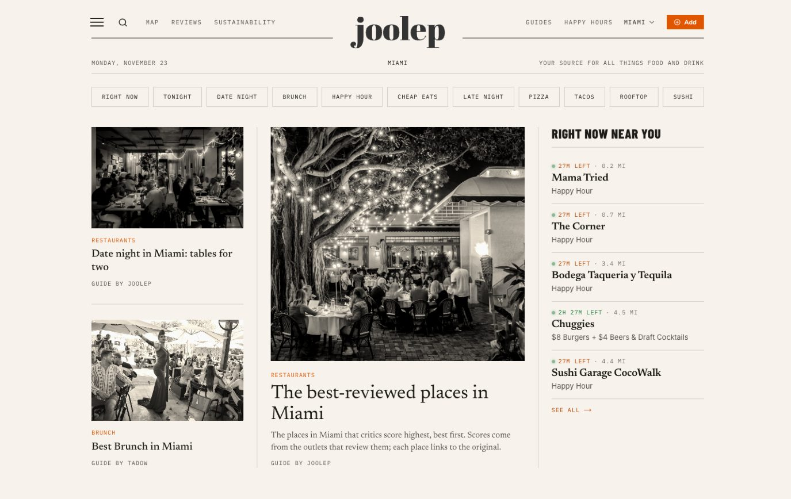
Home, light edition: dateline, filters, lead story and a live column of deals.
02
Place profiles with a point of view
A big condensed name, a kicker for the type of place, the chef, what it is good for and when the next special starts. The map and directions sit beside it.
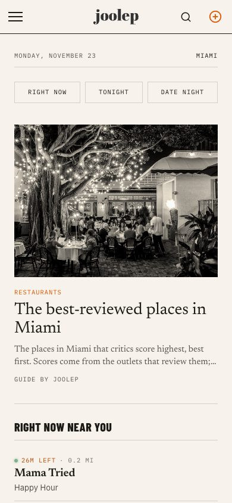
Mobile home
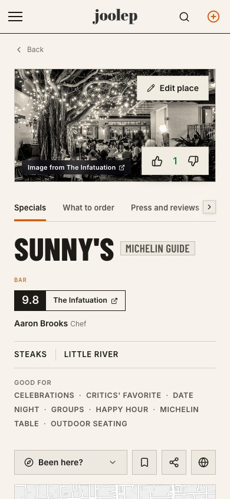
Mobile place profile
03
A map that shows time, not just place
Pins are colored by when a special runs: live now, today, or later. Chips jump to what people search for, such as Specials tonight, Farmers markets and Michelin star, and the list stays in sync with the map.
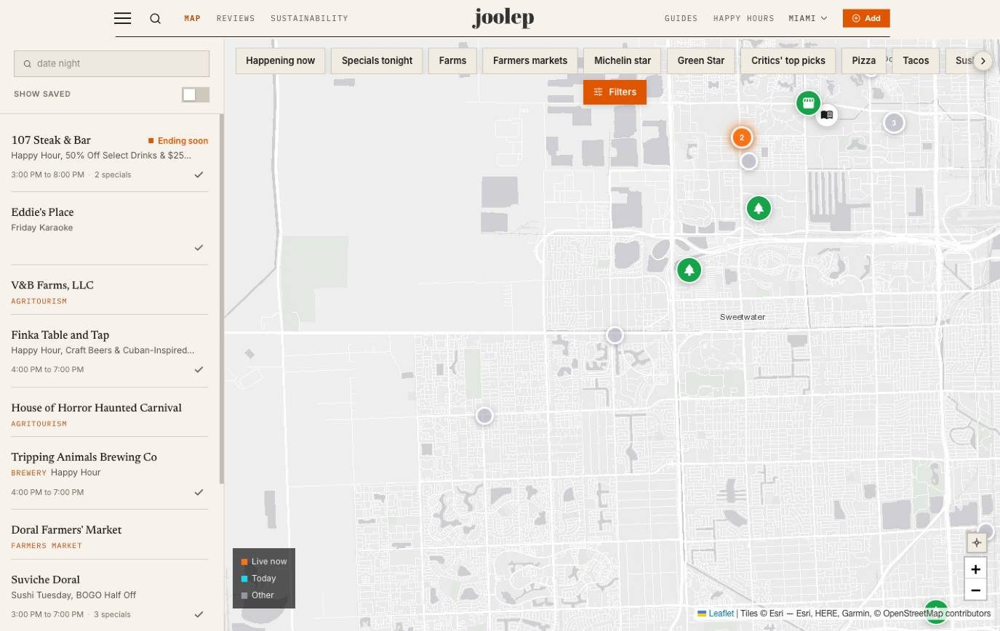
Map with a synced list and a legend for live now, today and other.
04
Chefs: the people behind the plates
A section no other dining app gives its own front door. Each week spotlights chefs, with where to taste what they make and the latest stories about them.
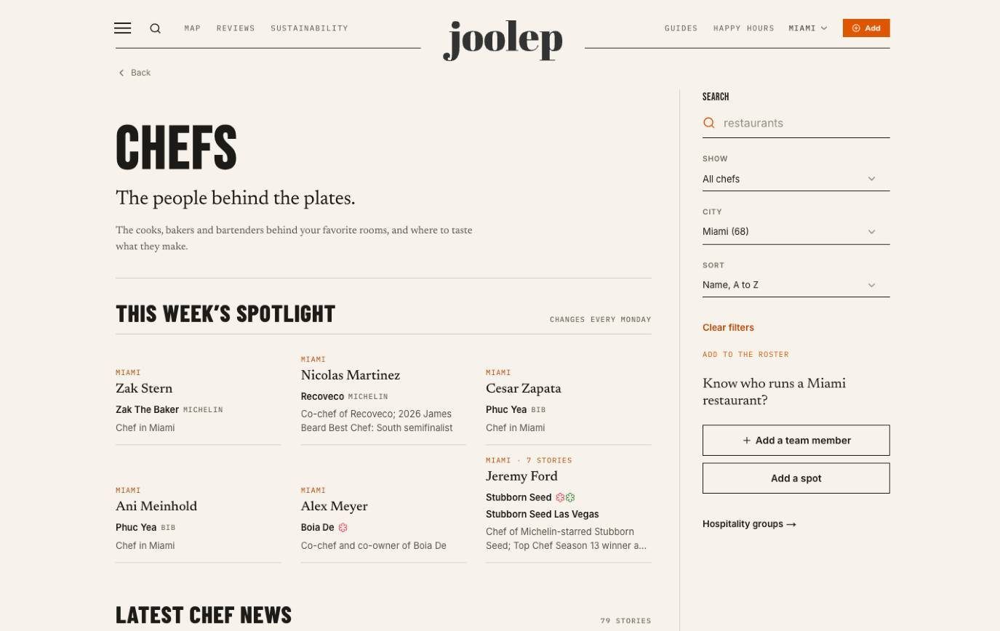
Chefs, with a weekly spotlight that changes every Monday.
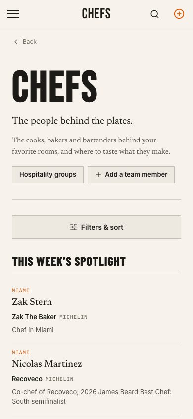
Mobile chefs
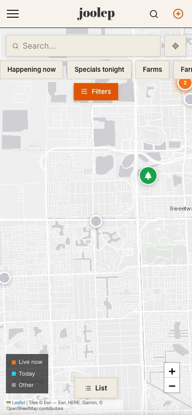
Mobile map
05
Sustainability gets its own section
Michelin Green Star kitchens, farms you can visit and markets worth a Saturday morning, with a map and a count of what is mapped so far.
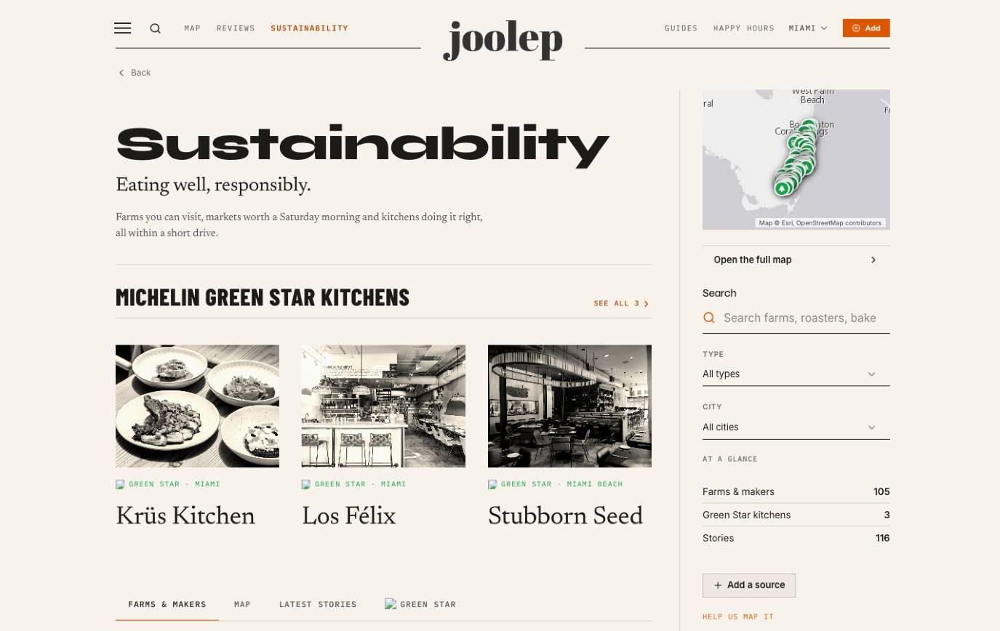
Sustainability: Green Star kitchens, farms and makers, stories and a map.
06
Happy hours, checked by the people who go
Every happy hour in the city, filterable by day, time, type and deal. Outlined display type for the title, a serif for the details and orange only for the times.
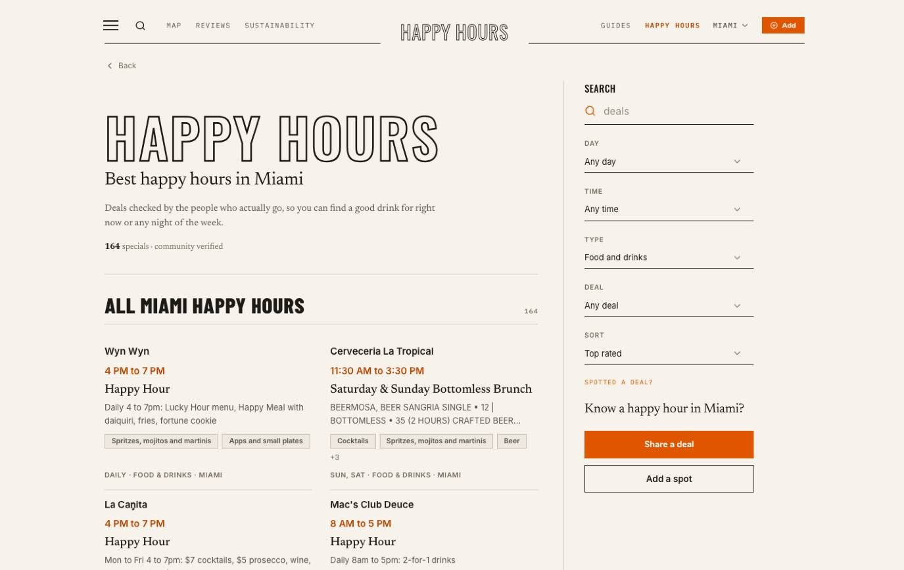
Happy hours with filters and a share-a-deal call to action.
07
A hamburger menu with personality
This was the most fun part to design. Each destination is set in its own typeface, so the menu reads like a magazine contents page and tells you what a section sounds like before you tap it. It also holds city, account, a light and dark switch and a “Find me something” shortcut.
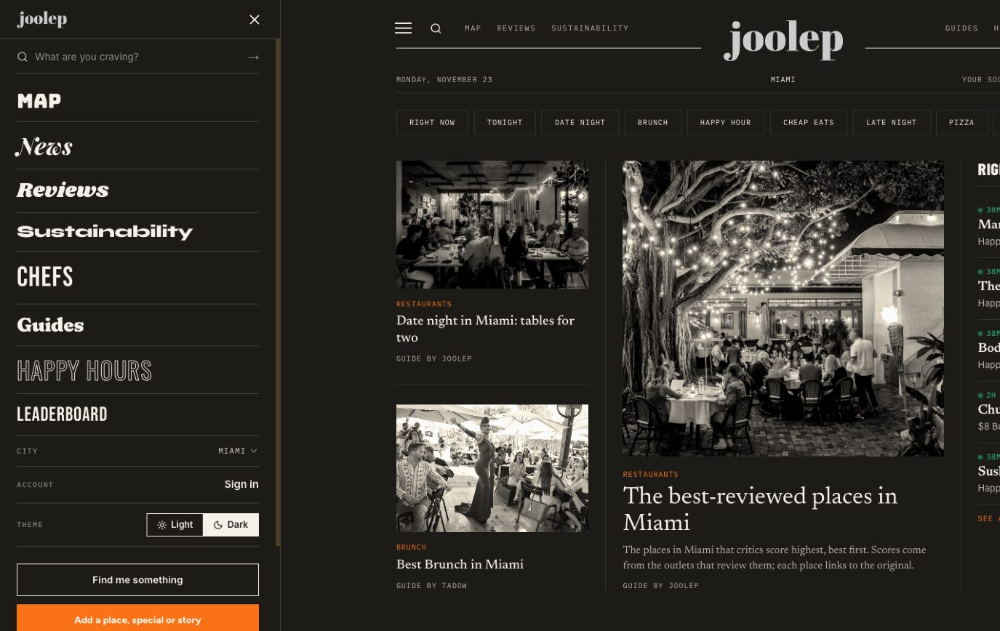
The menu slides over the page.
08
The page title moves into the nav
Scroll a page and its big headline travels up into the masthead. The Joolep logo shrinks away, and the page title takes its place in the nav, so you always know where you are.
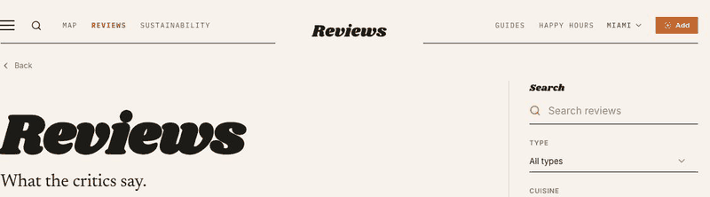
Scroll down and the logo gives way to “Reviews”; scroll back up and it returns.
09
The night edition
Every screen also has a dark mode, with the same type and the same orange accent on a warm near black.
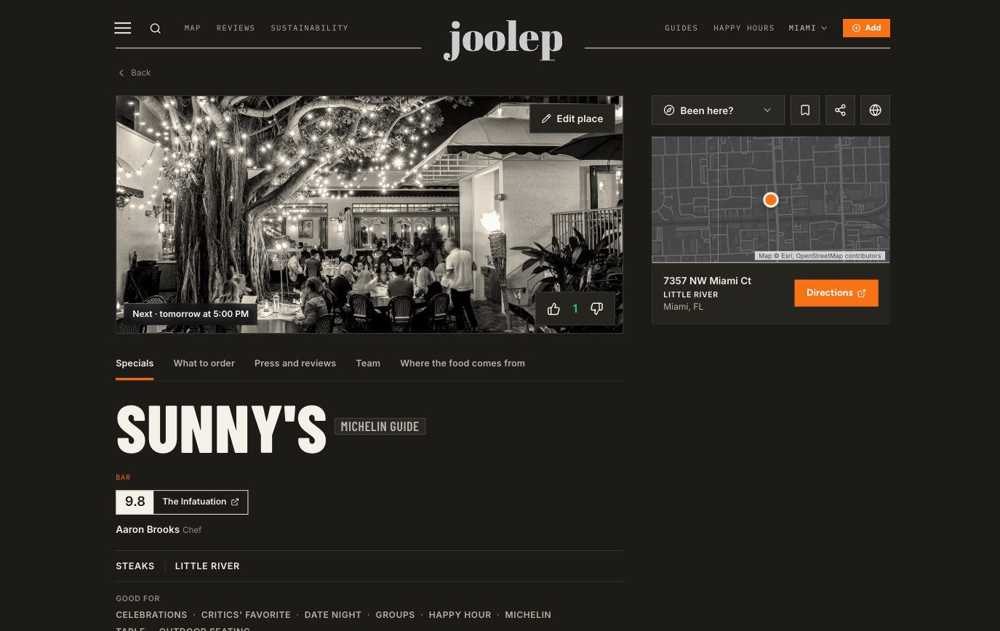
Place profile, dark
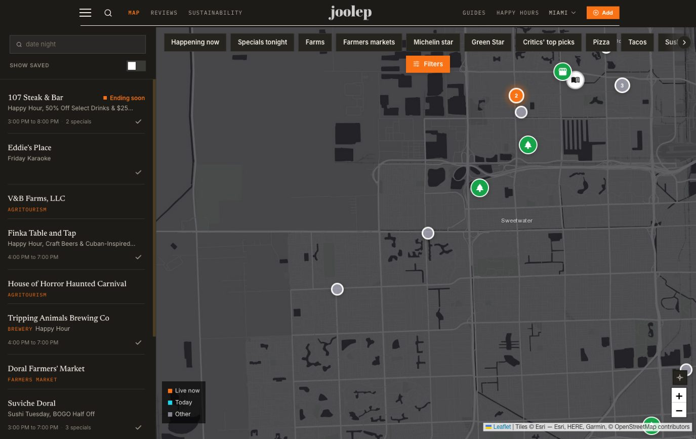
Map, dark
What makes 2.0 special
- Organized by time. The home page leads with what is happening right now near you, then what is coming up next.
- One place for the whole scene. Happy hours, specials, chefs, guides, sustainability and local news sit together, with the map close by.
- Built around neighborhoods. People browse by day, time and neighborhood, such as Brickell, Wynwood and Coral Gables.
- Open to the community. Anyone can add a spot, share a deal or write a guide, so the city fills in over time.
2.0 vs 1.0 and the mobile app
Open to opportunities
I took an idea from sketch to launch.
Founder, designer and researcher in one. Let’s talk about what you are building.